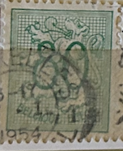
| SOURCE | TITLE| IMAGE MATCH | click to source page |
| eBay | Belgian & Colonies 1951-1960 Year of Issue Stamps for sale | eBay | 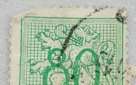 |
| eBay | Green Postage Stamps for sale | eBay | 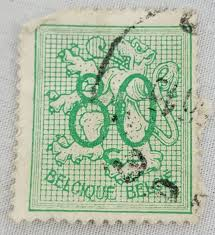 |
| HipStamp | Belgium 1951 Sc#418, SG#1348 80c Green Heraldic Lion Rampant USED-VG-NH. | Europe - Belgium & Colonies, General Issue Stamp / HipStamp | 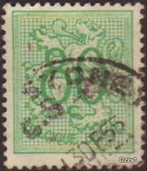 |
| Find Your Stamps Value | Lion Rampant, King Baudouin 2fr, 3.50fr Multicolored stamp price, value | 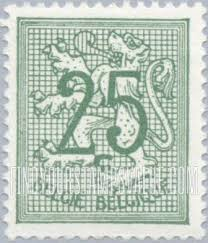 |
| Find Your Stamps Value | Value of green 10 lion suomi stamps | 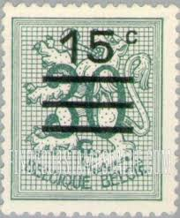 |
| Find Your Stamps Value | Lion Rampant 50c Light blue stamp price, value | 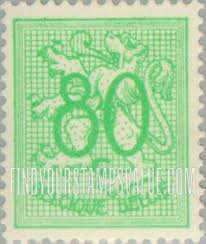 |
| eBay | Belgium - 1957 - Lion - New value #22 - 30C - #2062 | eBay | 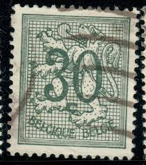 |
| HipStamp | Search "Belgium Precancel" / HipStamp | 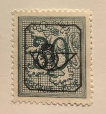 |
| Shutterstock | Belgium Circa 1957 Post Stamp Printed Stock Photo 1107207644 | Shutterstock | 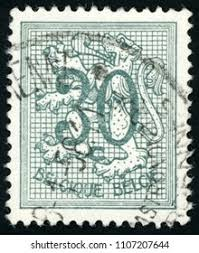 |
| Alamy | 2 fr belgian franc hi-res stock photography and images - Alamy | 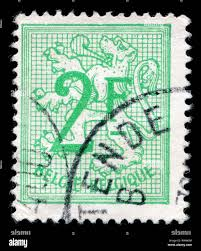 |
| HipStamp | Belgium, 1951, Lion, Numeral, 30c, used | Europe - Belgium & Colonies, Stamp / HipStamp | 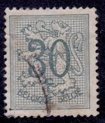 |
| lastdodo.com | LastDodo - jogo shop > Shop | 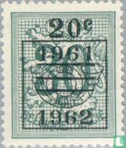 |
| Find Your Stamps Value | Prix du timbre Lion Rampant 40c Brown olive | 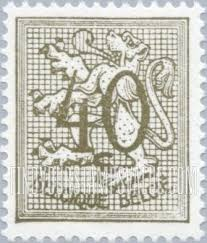 |
| Find Your Stamps Value | Lion Rampant 1fr Rose stamp price, value | 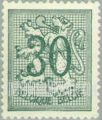 |
| eBay UK | Belgium - 1969 - Lion - New value #4 - 1.50Fr - #2045 | eBay UK | 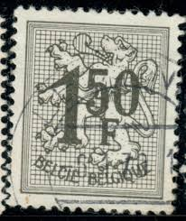 |
| HipStamp | Search "Belgium Precancel" / HipStamp | 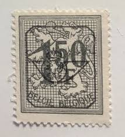 |
| gbenzi.it | stamps exchange, catalogue Belgium 1969 Belgium 1969 | 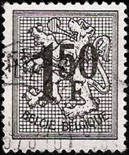 |
| Todocolección | belgica, 1972, filatelia juvenil, yvert 1638 - Buy Antique stamps of Belgium on todocoleccion | 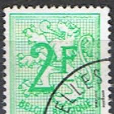 |
| sellosmundo.com | Colection Kontxi A page 7 | 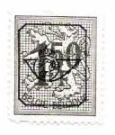 |
| Find Your Stamps Value | Prix du timbre Lion Rampant 1fr Rose | 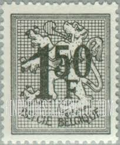 |
| Stamp Community Forum | Are These 2 Stanps Belgian Precancels? - Stamp Community Forum | 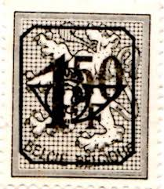 |
| Shutterstock | Belgian Lion: Over 770 Royalty-Free Licensable Stock Photos | Shutterstock | 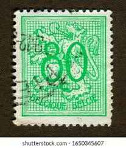 |
| Fandom | Belgium 1960 Heraldic Lion with Precanceled Number | JPP-Stamps Wiki | Fandom | 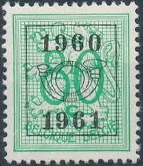 |
| Fandom | Belgium 1952 Official Stamps (Heraldic Lion with Numeral and B in oval) | JPP-Stamps Wiki | Fandom | 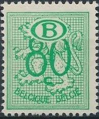 |
| eBay | Berlin, Follower 42 II stamped, Mi. 12,- | eBay | 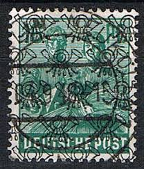 |
| Stamp Auction Network | catalog Level 3 | 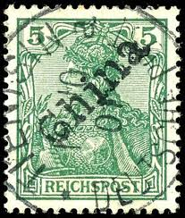 |
| Stamp Auction Network | Sparks Auctions Sale - 46 Page 51 | 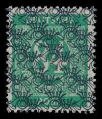 |
| Stamp Community Forum | Identifying My Stamps #2 - Stamp Community Forum | 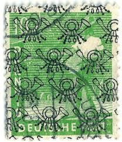 |
| Pngtree | Bouclier Des Armoiries De La Belgique PNG , élément, Icône, Pancarte Image PNG pour le téléchargement libre | 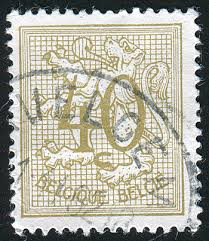 |
| Pngtree | ベルギーの国章の盾イラスト素材透過、PNGフリー画像ダウンロード - Pngtree | 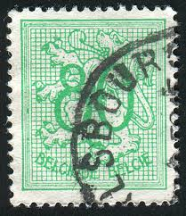 |
| eBay | German Postage 1901-1910 Year of Issue Stamps for sale | eBay | 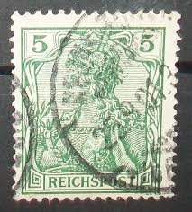 |
| eBay | France 5c Type Blanc Stamp - 1901 - PARIS Cancel - Sc. #113 - GREEN VFU | eBay | 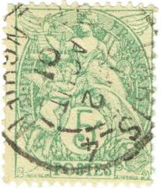 |
| Alamy | Saint Petersburg, Russia - September 18, 2020: Stamp printed in the Belgium with the image of the Number 40 on Heraldic Lion, circa 1951 Stock Photo - Alamy | 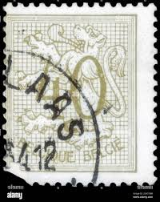 |
| eBay | Nyasaland/British Central African Colony Stamps for sale | eBay | 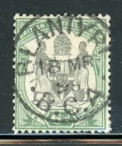 |
| Stamp Community Forum | Need Help Identifying Some Polish (?) Stamps ! - Stamp Community Forum | 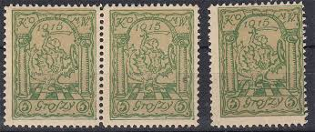 |
| The RainKey | Fiscal – Page 74 – The RainKey | 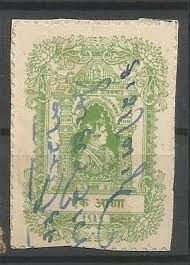 |
| eBay | Stamp Germany Reich Germania 5 Pfennig 1915 Perfin Mi. Nr. 85 [🇩🇪34746] | eBay | 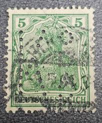 |
| Arya Stamps | Scott 419 | 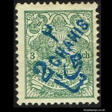 |
| hacfarestamp.co.uk | BCA/Nyasaland 1895 QV One Penny to One Pound overprinted SPECIMEN set in pairs SG 21s/29s mint - H & C Fare Stamp | 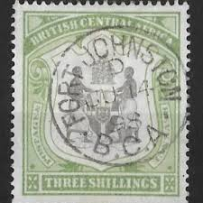 |
| Collectionati (@collectionati) • Facebook | 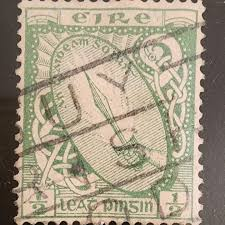 | |
| eBay | India, Baroda, K&M 451 + shade, used. 1939 1a green Revenue + shade, fresh, VF | eBay | 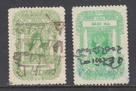 |
| eBay | Stamp Germany Deutsches Reich Germania 5 Pfennig 1907 Mi. Nr. 85 (34304) | eBay | 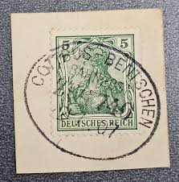 |
| eBay | Germany 1915 WWI Poland Stadtpost Warschau Warsaw Mi1b Used 101566 | eBay | 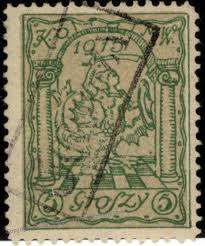 |
| Alamy | French postal stamp hi-res stock photography and images - Alamy | 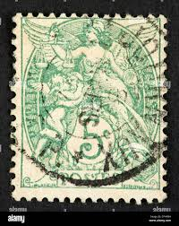 |
| JF-Stamps | East and West Asia | JF Stamps Danmark | 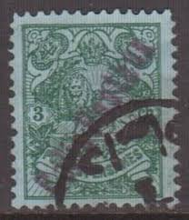 |
| eBay | German Stamps 1921-1930 Year of Issue for sale | eBay | 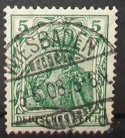 |
| LOT-ART | Great Britain - England 1867 - 10 shilling grey-green watermark ANCHOR - Stanley Gibbons 135 in Netherlands | 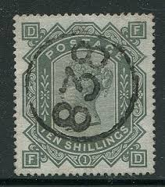 |
| Alamy | BELGIUM - CIRCA 1966: a stamp printed in Belgium shows August Friedrich Kekule (1829-1896), and benzene ring, was a German organic chemist and chemist Stock Photo - Alamy | 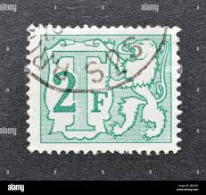 |
| buyhungarianstamps.com | B122 Hungary - King Matthias S/S (MNH) – Eastern Europe Postage Stamps | Hungaria Stamp Exchange | 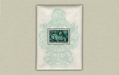 |
| BalkanPhila | Ottoman Period – Page 51 – BalkanPhila | |
| eBay | Turkey Newspaper Stamp Scott # P25 Used - 10p Grey Green w Handstamped Overprint | eBay | |
| Stamp Forgeries of the World | Stamp forgeries of Bulgaria | Stampforgeries of the World | |
| HipStamp | Persian stamp, Scott#365, used hinged, 3ch blue green, #ed-126 | Middle East - Iran, General Issue Stamp / HipStamp | |
| Burda Auction | German states / Germany / Europe / Philately / Mail Auction 31 | Burda Auction | |
| eBay | TIMBRE des COLONIES FRANÇAISES INDOCHINE N°15 oblitéré CACHET à DATE | eBay | |
| eBay | Used Victorian (1840-1901) Hong Kong Stamps (Pre - 1997) for sale | eBay | |
| Todocolección | belgica - ivert 2486/87 nuevos ** - jardin zool - Buy Antique stamps of Belgium on todocoleccion | |
| eBay | 1921-1923 Arab Kingdom Ovprt on 10pa Ottoman Empire Used🔥 | eBay | |
| The RainKey | Princely State – Court Fee & Revenues – Page 54 – The RainKey |